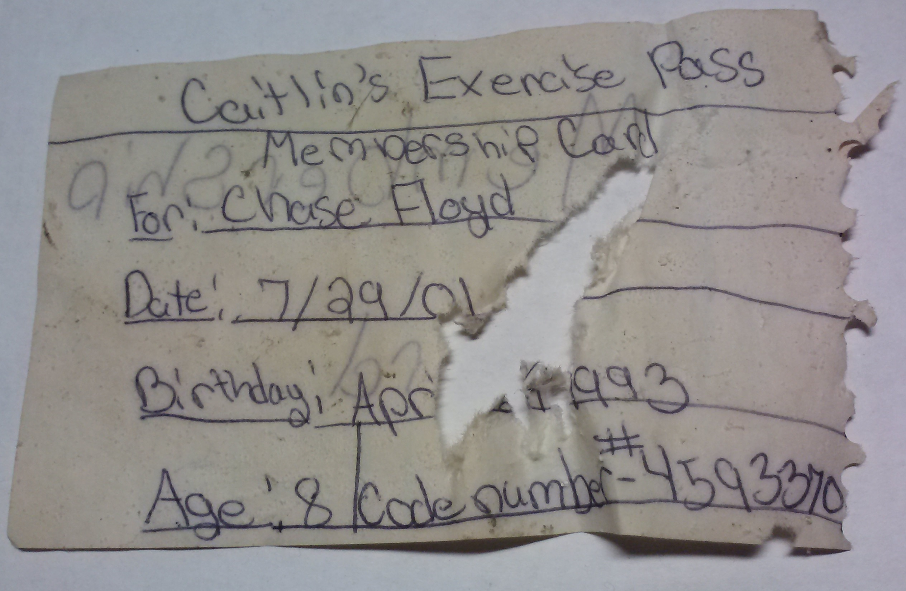
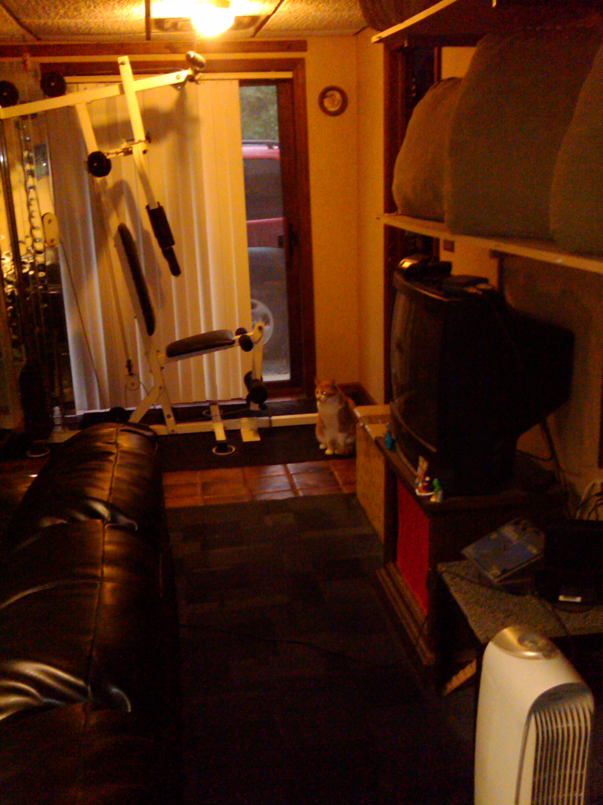
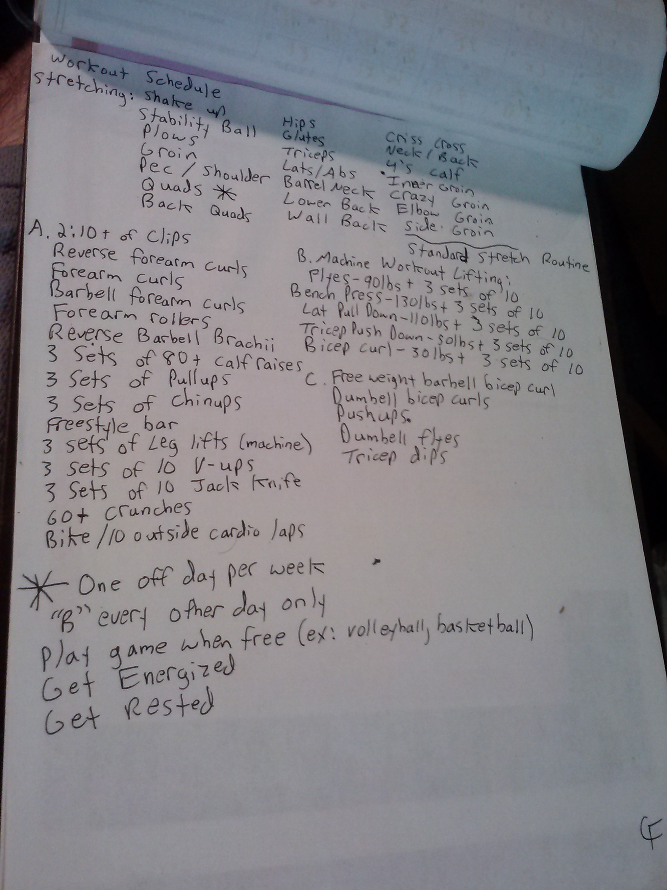
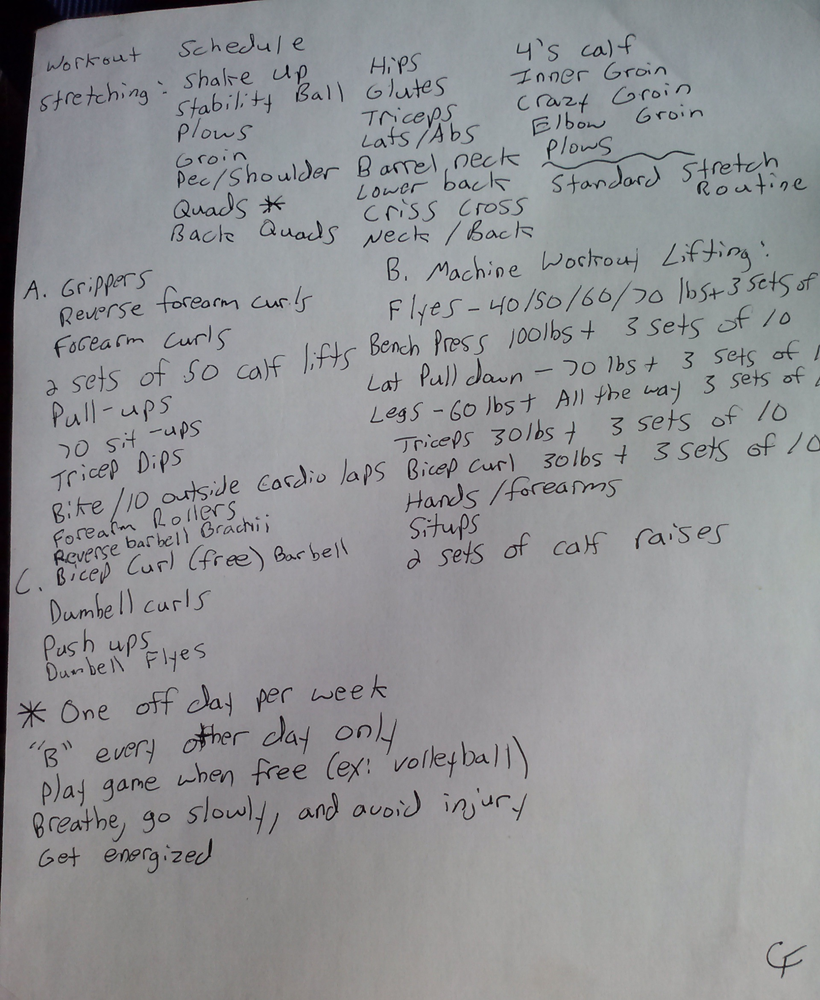
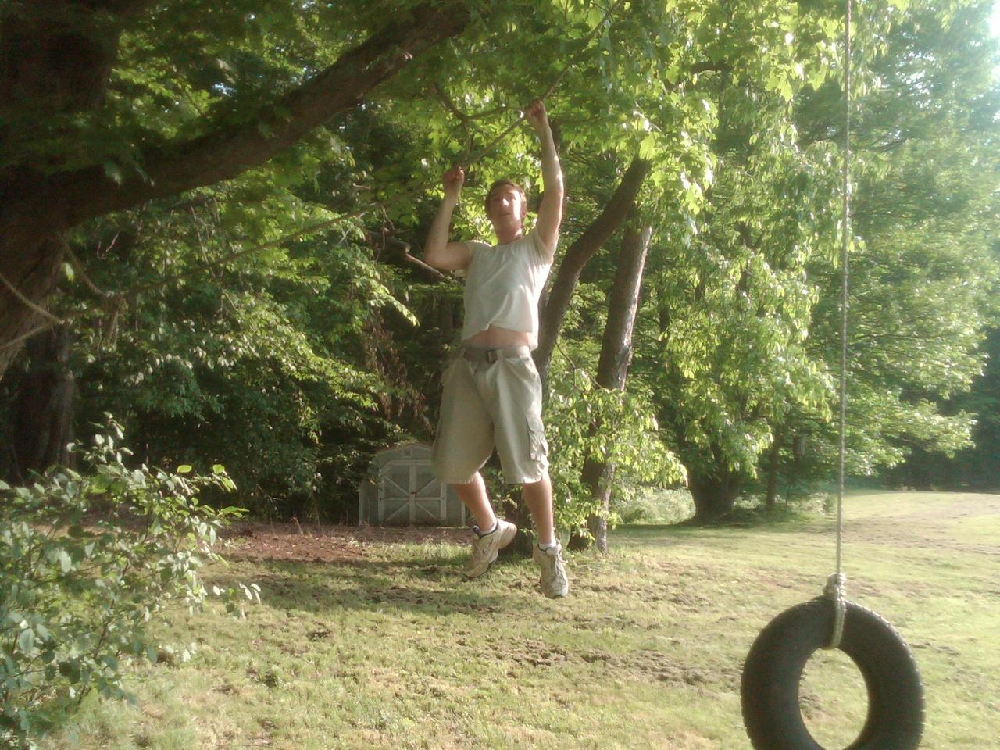
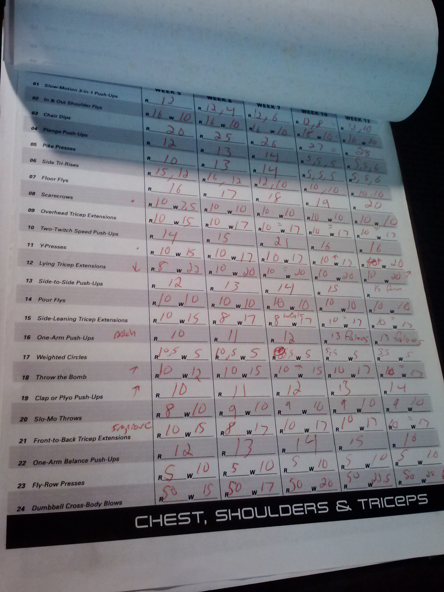
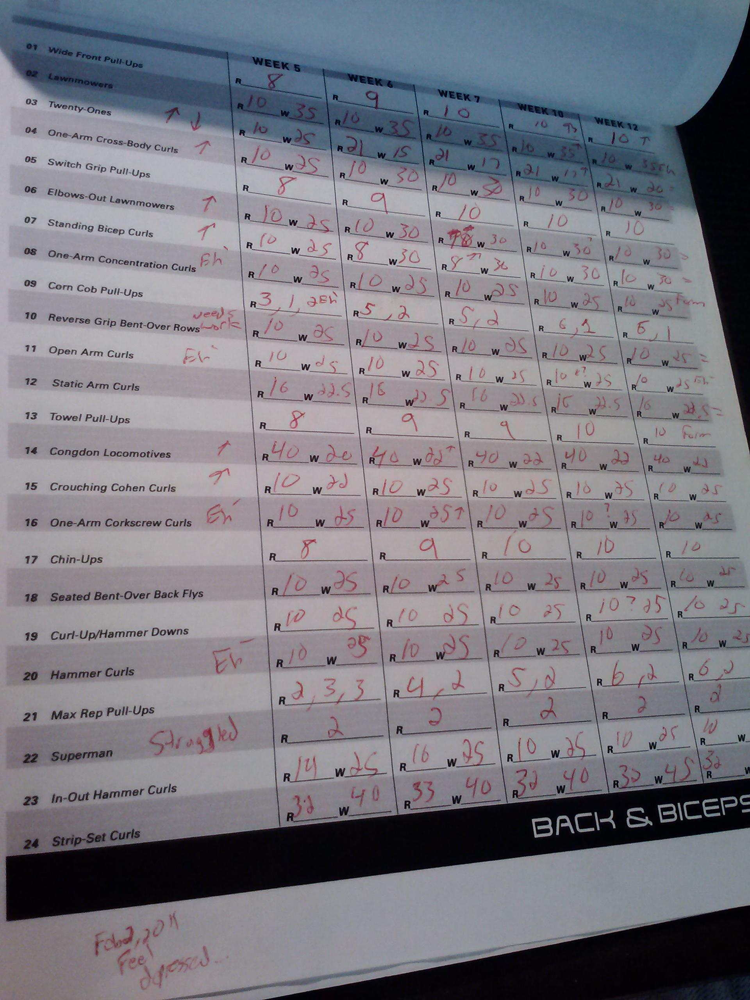
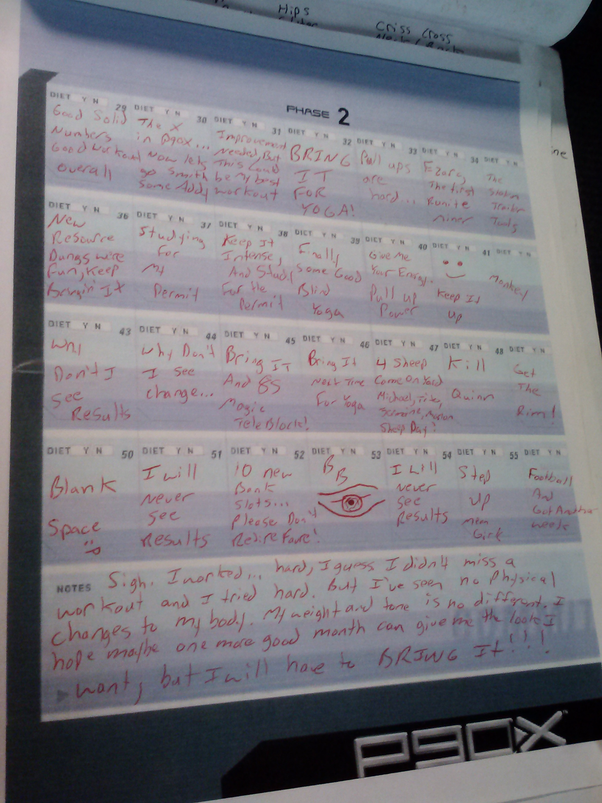
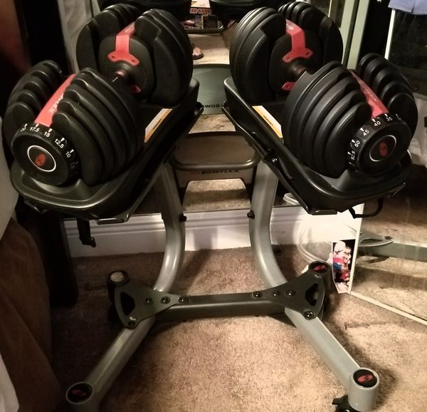

As one of my idols, the one and only Jack Lalane, once said; "Exercise is king. Nutrition is queen. Put them together and you've got a kingdom!" I couldn't agree more, and from a young age wisdom like this has guided me to consistently exercise and have an interest in my health and wellness! I feel that exercise and nutrition, along with the desire to keep growing, achieving, and improving in all facets of life via learning, doing, and experiencing new things is crucial to leading a happy and fulfilling life. I have thus created this page to share my adventures in fitness and health with the world, while also documenting my personal-bests to act as further motivation for myself whenever I train!
My exploits into the world of fitness and exercising ironically began at the behest of my sister, Caitlin. Prior to playing a year of Little League Baseball (during which I had the hit of a lifetime, but that is a story for another day!), I suppose she deemed my fitness needed a boost. Modeling herself after a personal fitness trainer, she thus started up "Caitlin's", in which I was the first (and only!) proud membership card holder!
I remember doing a lot of sit-ups, running/sprinting, push-ups, and other random things such as balancing and general sports activities while enrolled at "Caitlin's". This was my very first experience with organized physical fitness though, and it would remain that way until my very early teenage years...
Aside from my time at "Caitlin's" and playing youth sports, growing up fitness was not the major component of my life that it is today. It was still a component though, albeit a minor one, and I remember every year or so I'd start doing basic exercises again in preparation for the Physical Education President's Challenge Fitness Awards (aka the gym class physical fitness tests!). I am very competitive, and my competitiveness would display itself often during these competitions since I wanted to always do the very best that I could. One could argue that I am a rather average natural athelete though (:P), so to do well on these I always had to work harder than others in order to compete.
There are two categories of achievement for these tests, "Presidential" and "National", with the former being the highest possible ranking. To obtain these awards though one has to get "Presidential" or "National" in EVERY physical fitness event (situps, shuttle run, v-sit, pull-ups, and the mile), and this proved to be quite the challenge to a young Chase Floyd. Throughout elementary school and into junior high I had good speed, so the shuttle run was something I could usually get at least National in. The mile was manageable despite my lack of direct training and sit-ups were a breeze, but the two main things that always prevented me from earning the award were the v-sit and the dreaded pull-up. My failure to do the latter was on full display during my 9th grade test, which if I recall was around mid-Spring. I did 0 reps. I could not even do a single pull-up. This was infront of my class of 9th and 10th graders, many of them good atheletes, and I not only felt embarassed but ashamed at how I let myself be so weak.
I lacked the upper-body strength to do even one measly pull-up. I also had zero - Zilch - NADA, flexibility in my hamstrings growing up. These two things (pull-ups and the v-sit) always got in my way when it came to earning the fitness award, and it wasn't until my freshman year (9th grade) that I had enough and became determined to overcome this. I had been tinkering with my own basic workout plans for years, but it was time to take things to the next level. My dad helped me to get some weights/machines, a stretching mat, and to build a pull-up bar to get me going, but it would be up to me to create better workout plans and to utilize my newfound fitness environment. And utilize it I did...
The 1st and 2nd serious Workout Plans I developed!
 I became determined...obsessed, if you will, with improving my physical fitness from this point onward. I wanted to be big and strong like the "American Gladiators". I wanted to have no weaknesses in my form. But more than anything else, I wanted to EARN that fitness award. So I began training to directly address these flaws, and I started with the flexbility. I could not even come close to touching my toes, but one day I just had enough so I just grabbed on to them for dear life! The pain! The discomfort! It was real! But it also felt really...really good! Before I knew it, something just changed in my legs and my flexbility improved drastically. That next year, 10th grade, I easily got over 9 inches in the v-sit and earned presidential in it for the first time.
Pull-ups were a bit more difficult to master, since they are the kind of exercise that you can either do or not do. Fortunately the machine my father had gotten for me had a lat pull-down station, and I used this to begin building up the strength in my back needed to be able to do pull-ups. It took a few months, but eventually I was able to do my first REAL pull-up. Once I could do one, I just couldn't get enough! I was doing pull-ups as often as I could, as much as I could, and ANYWHERE that I could for as many reps as possible since I was determined to make things different the next time I had the chance to do them infront of my class...
When the next year's physical fitness tests finally rolled around, I was rearing and ready to finally earn that award. I stomped out the situps, blasted my way through the v-sit, and endured the mile. When it came time to do pull-ups, I proudly pumped out 12 solid reps in front of my class. I went from a literal zero, to a double-digit hero! However, my speed had decreased significantly, and I was unable to even register National on the shuttle run, thus making that vaunted award still out of my reach for at least another year...
I was pretty darn fast growing up. Definitely not the fastest kid, but one of the "faster" kids, if you will. The shuttle run used to be easy for me, but things had changed. I had gotten taller, my shoes no longer fit the way they used too, and my speed suffered as a result. I do not make excuses though, so heading into my 11th grade year I stepped up my lower body training. I did well on all of the other events again, this time pushing my pull-ups up to 16 reps, but yet again I could not crack National for the shuttle run. My training would thus have to continue, but time was running out...
Heading into my final, senior year I knew that I had to get that award. There was no other option. I could not fail, for all of the hard work I had been putting in would have gone to waste. By this time I had begun experimenting with several new fitness programs, such as P90X and using some Bowflex Dumbbells I had gotten for my birthday. Both things, combined with my running program, seemed to help my lower body strength and thus my speed. The real test would be my final President's Challegne Physical Fitness test though. Yet again the situps were a breeze, the v-sit was no match for my legs had become like Mr. Fantastic's, and my mile was solid enough to earn National. My pull-ups, once my achilles heel, were now an asset as I knocked out 18 solid reps to the amazement of my class. All that remained was that shuttle run, but this time I managed to run it in a smidge over 9 seconds which was all I needed to earn National and the President's Challenge Physical Fitness Award!
   I had done it, and I was proud of myself for I had worked hard to earn that award. I went from being the kid that was totally embarrassed infront of the class to being the man that younger students looked up to. Think what you will about the value of embarrassment and ridicule, but at least for me these became very positive motivators in my life. It might have just been gym class, but earning this meant something to me and I even then I knew knew that there was some real positivity to be shared from all of this. I also knew that my love for exercise and fitness was not going anywhere, so this meant that I had to keep improving my form. And improve I did, starting by adding the number two to a certain upper-body rep count...
Despite the shuttle-run technically being the last piece of the puzzle required for me to earn the President's Challenge Award, the pull-up was always near the top of my mind. I became fascinated with this movement, for it completely embodied the notion of being able to do something. Either you could do one, or you could not. There was not much gray area. Needless to say, after my senior year ended I remained focused on fitness and especially on my pull-ups. A few months earlier in the year I had found this website called "Twentypullups.com" (Click here to go to the site.), and on it there was a "Hall-Of-Fame" section that people could earn a spot on by filming themselves doing 20 pull-ups. The minute I found this I just knew that I had to earn my way onto that list, especially since I just had done 16 pull-ups in my gym class the year prior (I found this site a few weeks before knocking out 18 reps during my senior year). I thus began training even harder, focusing more on my pull-ups, and a few months later in late July I finally did my first ever set of 20 pull-ups!
I began college a month or so after accomplishing this, but my exploits in fitness were far from over. I had to restructure a lot of my workouts due to not having all of my equipment with me, and this meant doing a lot more bodyweight work aka calisthenics. I began traveling to a nearby abandoned playground to do my "City Workout", which consisted of a lot of pull-ups, dips, triceps dips, and push-ups. I also continued my stretching as well, along with running on the track and the incorporating of a lot of planks (the ab kind!)!
I continued utilizing this program for many years during my time in college, but everytime I returned home for the Summer I would amp back up my old workout routines. However, as the years went by it became more and more difficult to get back to my prior level, and I was unable to reach 20 pull-ups again. Things got even worse during my final two or so years of college due to my increased focus on school work and "over-healthy" eating...
Chase Floyd does not give up though, so upon graduating from college I was determined to "get my life back" and that meant getting my BODY back. It took MANY years though, far longer than it probably should have, and it also took A LOT of experimentation with new and different workout programs. I fought through it all though, even the dreaded "dead-legs" era (a story, involving some serious over-stretching, for another day!), and I can now proudly say that I can again do 20 pull-ups! Wait....not only can I do 20, but I can now do MORE than 20!!!